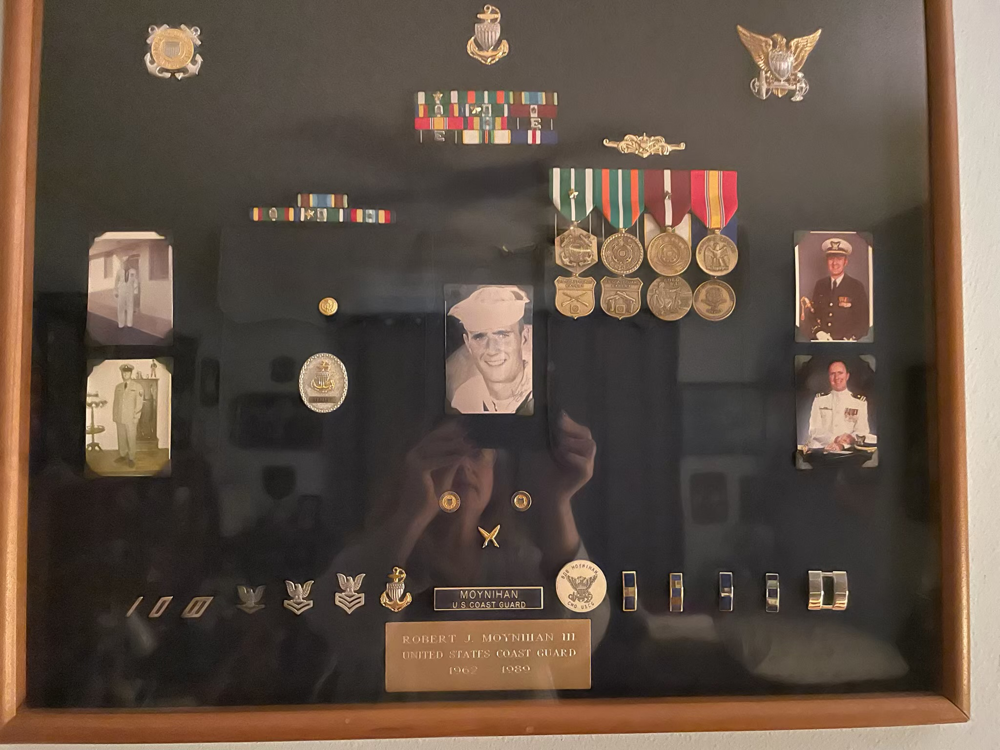
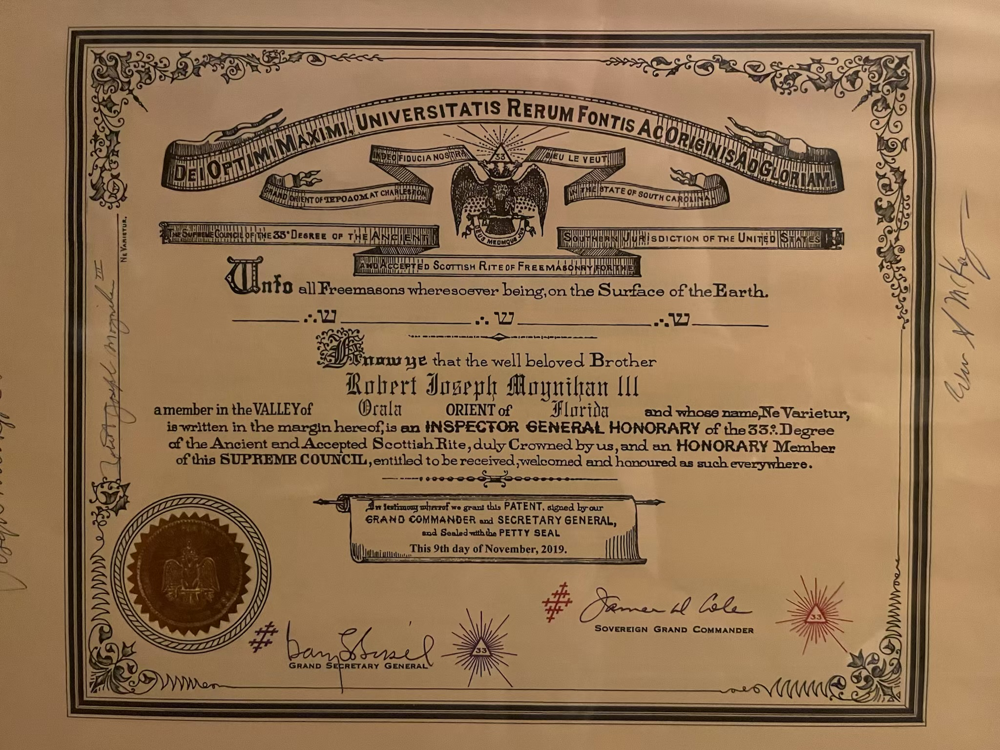

Meet Robert Joseph Moynihan III
Explore his journey through life, from military service to his dedication as a 33rd-degree Scottish Rite Freemason.
About Robert Joseph Moynihan III
 
Robert Joseph Moynihan III followed in the footsteps of his father, carrying not only his name but also a strong sense of duty and tradition. Born into a family with deep roots in both Prince Edward Island and Ireland, Robert grew up with an appreciation for heritage and the importance of preserving family stories. He dedicated much of his life to serving his country, rising through the ranks to become a Lieutenant (O-6) in the U.S. Coast Guard, where he had a distinguished career spanning multiple decades.
Throughout his service, Robert was stationed in various locations, including Hawaii, Michigan, and Washington, D.C. Despite the demands of his military career, he prioritized his family, creating cherished memories through simple pleasures like weekend trips, home-cooked meals, and meaningful conversations that often revolved around their rich family history. His leadership extended beyond the military; he was a 33rd-degree Scottish Rite Freemason, a testament to his commitment to moral and personal development, as well as his dedication to the principles of brotherhood and service.
After retiring from the Coast Guard in 1989, Robert and his wife Carolyn settled in Martinsburg, West Virginia, before eventually finding their forever home in The Villages, Florida. His legacy is one of dedication, love, and resilience. These are values that he instilled in his children and grandchildren. His commitment to family, service, and personal growth ensured that future generations would always have a sense of belonging and appreciation for their roots.